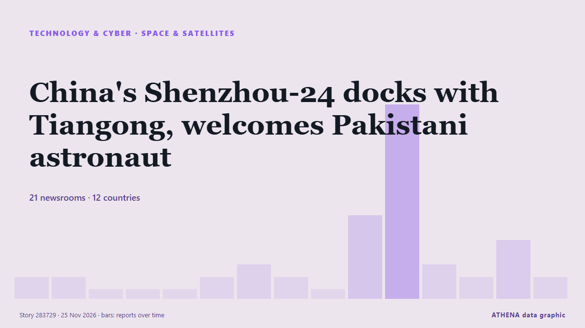

China's Shenzhou-24 docks with Tiangong, welcomes Pakistani astronaut

China rocket blasts off on Shenzhou-24 mission: state media. από Gulf News
Τι άλλαξε 3 νέες αναφορές από 3 μέσα τις τελευταίες 24 ώρες.
Δείτε τις πηγές ›Τεκμήριωση: Επαρκής
Αναφέρθηκε ανεξάρτητα από 23 μέσα σε 14 χώρες από τις 21 Νοε, πρώτο το Xinhua (English) — page reader· η κάλυψη εξασθενεί. Το ATHENA εκτιμά τον κίνδυνο χαμηλό (1.9/10), κυρίως λόγω της σοβαρότητάς του και της εμβέλειάς του. Βεβαιότητα 86% (υψηλή): το επιβεβαιώνουν 23 ανεξάρτητα μέσα, μέση αξιοπιστία 74%. Μέσα ανά χώρα: Κίνα (13), Πακιστάν (6), Ινδία (3). Κάλυψη: 21 Νοε έως 26 Νοε, 110 ώρες.
Τι άλλαξε: 3 νέες αναφορές από 3 μέσα στο 24ωρο έως 26 Νοε.
Πρώτη διατύπωση: Launch site ready for China's Shenzhou-24 spaceflight mission
ΑυτοματοποιημένοΕπιλέχθηκε, ομαδοποιήθηκε και βαθμολογήθηκε με τη δημοσιευμένη μέθοδο της ATHENA από 22 ανεξάρτητα μέσα. Ο τίτλος είναι του μέσου· οι προτάσεις της ATHENA ακολουθούν σταθερά πρότυπα - δεν τις γράφει παραγωγική ΤΝ. Πώς λειτουργεί →
Πώς να διαβάσετε αυτή τη σελίδα
- Τι διαβάζετε
- 23 μέσα σε 14 χώρες ανέφεραν αυτό το γεγονός. Οι αναφορές παρακάτω εμφανίζονται με τη σειρά που δημοσιεύτηκαν· κάθε τίτλος ανοίγει το αρχικό άρθρο. Το ATHENA δεν γράφει δικά του ρεπορτάζ.
- Η εκτίμησή μας
- Για την καταγραφή — Οι αναφορές περιγράφουν ένα ολοκληρωμένο, εσωτερικό, εμπορικό ή προσωπικό ζήτημα. Το καταγράφουμε ώστε να βλέπετε ποιος το ανέφερε και πότε. Δεν παρακολουθούμε εδώ κίνδυνο ευρύτερης σύγκρουσης.
- Πόσα στοιχεία υπάρχουν
- Επαρκής Αρκετά ανεξάρτητα μέσα συμφωνούν, αλλά η εικόνα μπορεί ακόμη να αλλάξει.
Αφού αφαιρεθούν οι επαναλήψεις, τα άσχετα και τα παλιά στοιχεία, υπολογίζονται 22 από τις 36 αναφορές που παρατίθενται· το 100% των τίτλων αντιστοιχεί στο γεγονός.
- Τι δεν σημαίνει
- Το ATHENA μετρά πώς καλύπτεται ένα γεγονός, όχι αν είναι αληθές. Δεν είναι πρόβλεψη, κρίση για το ποιος έχει δίκιο ή συμβουλή.
- Τι θα την άλλαζε
- Αναφορές από άλλα ανεξάρτητα μέσα που δείχνουν διαφορετική εξέλιξη, ή σαφής επιβεβαίωση ή διάψευση από επίσημη πηγή.
Εκτίμηση R2 · ανανεώνεται με κάθε ενημέρωση της σελίδας. Το ATHENA δεν έχει δημοσιεύσει ακόμη ιστορικό επιδόσεων για αυτές τις εκτιμήσεις· όταν το κάνει, θα συνδέεται εδώ.
Με μια ματιά
Επιλέγεται, βαθμολογείται και γράφεται από τη δημοσιευμένη μεθοδολογία του ATHENA. Κανένας συντάκτης δεν παρεμβαίνει σε μεμονωμένα γεγονότα. Πώς παράγεται ›
| 21 Nov 16:56 UTC | 1 |
|---|---|
| 21 Nov 22:56 UTC | 1 |
| 22 Nov 04:56 UTC | 0 |
| 22 Nov 10:56 UTC | 0 |
| 22 Nov 16:56 UTC | 0 |
| 22 Nov 22:56 UTC | 1 |
| 23 Nov 04:56 UTC | 2 |
| 23 Nov 10:56 UTC | 1 |
| 23 Nov 16:56 UTC | 0 |
| 23 Nov 22:56 UTC | 6 |
| 24 Nov 04:56 UTC | 15 |
| 24 Nov 10:56 UTC | 2 |
| 24 Nov 16:56 UTC | 1 |
| 24 Nov 22:56 UTC | 4 |
| 25 Nov 04:56 UTC | 2 |
| 25 Nov 10:56 UTC | 0 |
| 25 Nov 16:56 UTC | 0 |
| 25 Nov 22:56 UTC | 0 |
| 26 Nov 04:56 UTC | 1 |
| 21 Nov 16:57 UTC | 0.0 |
|---|---|
| 24 Nov 11:41 UTC | 1.7 |
| 25 Nov 05:12 UTC | 1.9 |
| 26 Nov 06:46 UTC | 1.9 |
Γιατί αυτοί οι αριθμοί
Σημασία
Πόσο πολύ και πόσο εμφανώς αναφέρεται η είδηση.
Κίνδυνος
Τι περιγράφουν οι αναφορές, βαθμολογημένο για πιθανή ζημιά. Δεν είναι πρόβλεψη.
Βεβαιότητα
Πόσο καλά την στηρίζουν οι ανεξάρτητες πηγές.
Η κάλυψη — ποιος το ανέφερε και πότε
ο τίτλος όπως δημοσιεύτηκε · ανοίγει το πρωτότυπο- Xinhua (English) — page reader · ΚίναLaunch site ready for China's Shenzhou-24 spaceflight mission
- Xinhua (English) — page reader · ΚίναLaunch site ready for China's Shenzhou-24 spaceflight mission
- People's Daily English — page reader · ΚίναShenzhou-23 crew prepares for 'space rendezvous' as Shenzhou-24 mission nears launch
- NDTV · ΙνδίαPakistan Set To Launch First Astronaut On Chinese Space Mission
- Business Recorder · ΠακιστάνAhsan Iqbal in Beijing for departure ceremony of Pakistan's first astronaut
- Indian Express · ΙνδίαPakistani astronaut to make history as first foreigner aboard China’s space station
- Express Tribune · Πακιστάν'I carry the name of Pakistan on my shoulder': Zeeshan Ali set for historic spaceflight aboard China's Shenzhou-24
- CGTN (China) · ΚίναChina unveils Shenzhou-24 crew for space station mission
- CGTN (China) · ΚίναPakistani media highlight astronaut's role in Shenzhou-24 mission
- CGTN (China) · ΚίναChina's historic Shenzhou-24 space crew opens up ahead of launch
- Geo News (English) · ΠακιστάνPakistan's first astronaut Zeeshan Ali set for historic liftoff aboard Shenzhou-24
- ARY News · ΠακιστάνPakistan set to make history as first astronaut joins China’s Shenzhou-24 Mission
- Gulf News · Ηνωμένα Αραβικά ΕμιράταPakistan astronaut to make history with China space mission
- Xinhua (English) — page reader · ΚίναAstronauts of China's Shenzhou-24 mission meet press
- Xinhua (English) — page reader · ΚίναShenzhou-24 astronauts share preparation for spaceflight mission
- Xinhua (English) — page reader · ΚίναMeet first foreign astronaut to board China's space station
- Xinhua (English) — page reader · ΚίναFlight engineer of Shenzhou-24 mission confident in tasks
- Al Jazeera English · ΚατάρPakistan’s Zeeshan Ali set for historic flight to China’s space station
- Gulf News · Ηνωμένα Αραβικά ΕμιράταWho is Zeeshan Ali, the Pakistani pilot set to make space history?
- CGTN (China) · ΚίναAstronauts of Shenzhou-24 mission meet press
- DW English · ΓερμανίαPakistani astronaut to join Chinese space mission
- Dawn · Πακιστάν'Carrying hopes of 250m people': Zeeshan Ali to be 'first' Pakistani astronaut in space aboard China’s Shenzhou-24
- Türkiye Today · ΤουρκίαChina's Shenzhou-24 mission to carry first Pakistani astronaut into orbit
- Asharq Al-Awsat (English) · Σαουδική ΑραβίαChina to Launch Space Mission with First Foreign Astronaut
- Business Recorder · ΠακιστάνPakistan’s Zeeshan Ali set for historic space mission aboard Shenzhou-24
- The Independent · Ηνωμένο ΒασίλειοChina set for landmark space launch with rocket carrying first foreign astronaut
- CGTN (China) · ΚίναShenzhou-24 mission to conduct over 90 space experiments, tests
- Space.com · Ηνωμένες ΠολιτείεςChina launches Pakistani astronaut to Tiangong space station, its 1st international visitor, alongside Shenzhou-24 crew (video)
- CGTN (China) · ΚίναAstronauts board Shenzhou-24, take off in about 2 hours
- Times of India · ΙνδίαChina launches Shenzhou-24 carrying first Pakistani astronaut to space station
- TRT World · ΤουρκίαChina launches Shenzhou-24 mission carrying Pakistan's first orbital astronaut
- New Straits Times · ΜαλαισίαChina rocket blasts off on Shenzhou-24 mission
- Gulf News · Ηνωμένα Αραβικά ΕμιράταChina's Shenzhou-24 docks with Tiangong, welcomes Pakistani astronaut
- Asharq Al-Awsat (English) · Σαουδική ΑραβίαChina's Shenzhou-24 Docks at Space Station with Pakistani National as 1st Foreign Astronaut
- The Citizen (Tanzania) · ΤανζανίαChina's Shenzhou-24 docks at space station with Pakistani national as first foreign astronaut
- Arab Times · ΚουβέιτChina sends Pakistani astronaut to space in historic Shenzhou-24 mission